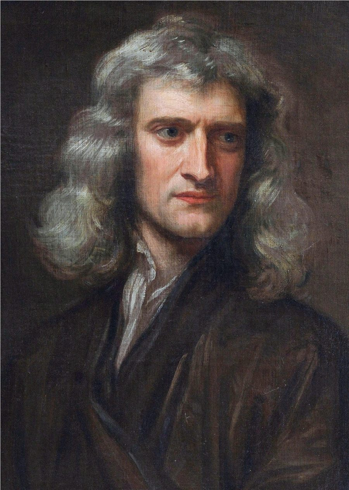
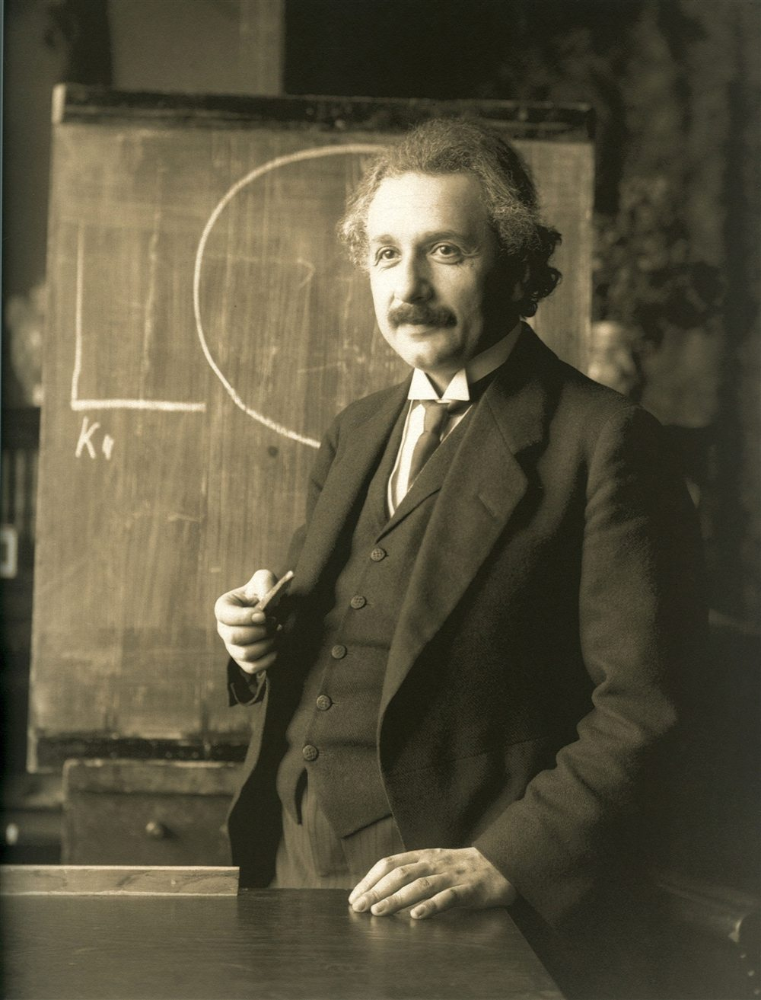
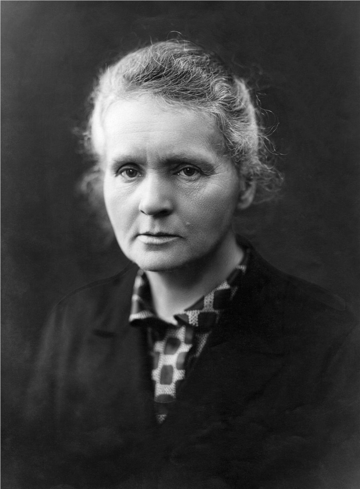

Physics
Fields, motion, matter, energy, spacetime, probability, and information supply the constraints. The genealogy below shows how those descriptions were built and where each one stops.
Trace the physics genealogy →Mechanics gives motion to fluids. Thermodynamics meets probability and becomes statistical mechanics. Electromagnetism becomes light, relativity, and quantum field theory. Follow the inheritances, transfers, and revolutions that made today’s physics.
The atlas remains rooted in physics, but the borders between sciences are working interfaces, not walls. Chemistry asks how quantum matter binds and reacts; biology asks how molecular systems store information, harvest free energy, and organize far from equilibrium. New sciences can join through the same explicit bridge concepts.
Fields, motion, matter, energy, spacetime, probability, and information supply the constraints. The genealogy below shows how those descriptions were built and where each one stops.
Trace the physics genealogy →Quantum structure becomes bonding; thermodynamics becomes reaction direction; kinetics becomes reaction rate; collective matter becomes materials. The periodic table is the current chemistry gateway.
Enter atoms, bonds, and reactions →Molecules fold, membranes phase-separate, cells process signals, genomes preserve sequences, and organisms maintain local order by consuming free energy. Biophysics is the present bridge; future biology exhibits can branch from it.
Cross into living systems →Select any field to illuminate its direct ancestors and descendants. The connections show major conceptual transfers, not every historical influence. Search by field, concept, or physicist.
These scientists are waypoints in a much larger human network of observers, instrument makers, mathematicians, experimentalists, teachers, and collaborators. Each image below is stored locally and public domain.

Built a mathematical synthesis of motion and gravitation, developed calculus independently, and transformed optics through experiments with prisms and color.
Portrait source · public domainJoined experiment, mathematical motion, and telescopic observation; his work on inertia and falling bodies prepared the ground for classical mechanics.
Portrait source · public domain
Reframed space, time, gravity, light quanta, and Brownian motion. Relativity grew from many prior measurements and later needed a community to test and extend it.
Photo source · public domainDiscovered electromagnetic induction and made field lines physically meaningful through unusually clear and inventive experiments.
Portrait source · public domain
Unified electric and magnetic phenomena in equations whose waves travel at light speed, revealing light itself as electromagnetic.
Portrait source · public domain
Established radioactivity as a quantitative field, discovered polonium and radium with Pierre Curie, and linked atomic change to measurable energy.
Photo source · public domainSeven deep guides turn landmark concepts into interactive instruments: launch an orbit, compare moving clocks, build interference, follow stellar collapse, outrun light in water, reshape a free-energy landscape, and compare physical with information entropy. Every other field opens its own sourced guide from the timeline above.